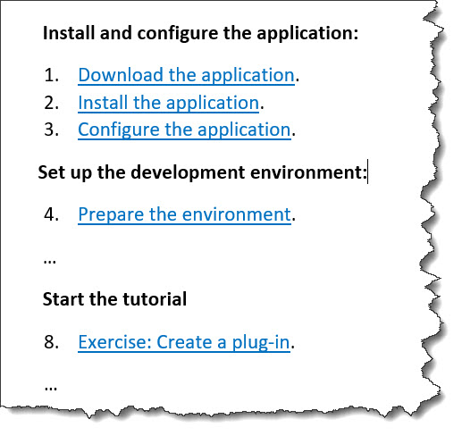

<stepsection>
The <stepsection> element contains expository text that might be
rendered before a step.
Usage information
The <stepsection> element can be used to
break up lengthy procedures by providing labels for groups of
steps. Note that introducing <stepsection>
elements will not affect the contiguous numbering of the steps.
Rendering expectations
Processors which render the content of <stepsection> elements
among the <step> elements MUST
NOT number the <stepsection> elements.
Specialization hierarchy
The <stepsection> element is specialized from
<li>. It is defined in the task module.
Content model
(Text | <audio> | <dl> | <div> | <example> | <fig> | <image> | <lines> | <lq> | <note> | <object> | <ol> | <p> | <pre> | <simpletable> | <sl> | <table> | <ul> | <video> | <cite> | <include> | <keyword> | <ph> | <q> | <term> | <text> | <tm> | <xref> | <data> | <foreign> | <draft-comment> | <fn> | <indexterm> | <required-cleanup>)*
Contained by
- Text
<audio><cite><data><div><dl><draft-comment><example><fig><fn><foreign><image><include><indexterm><keyword><lines><lq><note><object><ol><p><ph><pre><q><required-cleanup><simpletable><sl><table><term><text><tm><ul><video><xref>
Contained by
Inheritance
- topic/li task/stepsection
The <stepsection> element is specialized from <li>. It is defined in the task module.
Attributes
The following attributes are available on this element: universal attributes.
The following attributes are available on this element: universal attributes.
Example
This section is non-normative.
The following code sample shows how
<stepsection> element can be used to group
steps in a high-level overview topic that links to other
topics:
<steps>
<stepsection>Install and configure the application:</stepsection>
<step>
<cmd><xref keyref="download">Download the application</xref>.</cmd>
</step>
<step>
<cmd><xref keyref="install">Install the application</xref>.</cmd>
</step>
<step>
<cmd><xref keyref="configure">Configure the application</xref></cmd>
</step>
<stepsection>Set up the development environment:</stepsection>
<step>
<cmd><xref keyref="prep">Prepare the environment</xref>.</cmd>
</step>
<!-- ... -->
<stepsection>Start the tutorial:</stepsection>
<step>
<cmd><xref keyref="create-plugin">Exercise: Create a plug-in</xref>.</cmd>
</step>
<!-- ... -->
</steps>This topic might be rendered in the following way. Note that the
numbering of the steps is not affected by the introduction of the
<stepsection> elements.
